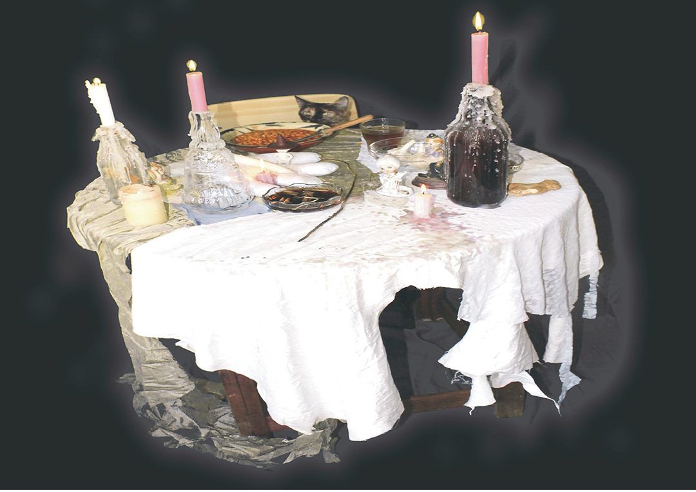
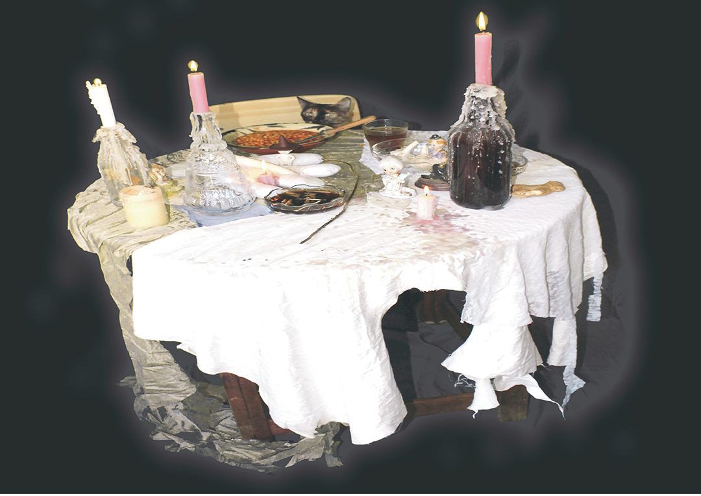
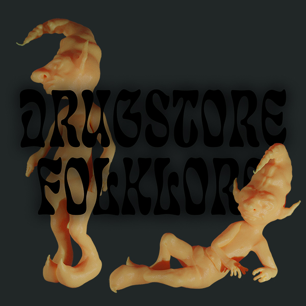

Se trata de explorar este límite, entre lo cuqui y lo abyecto, entre lo tierno y lo siniestro. Tensiones entre la higiene y la suciedad, entre lo de verdad y el artificio. El terror y la dulzura de aquello que no está ni aquí ni allá. Tratando todas sus dimenciones, conceptuales y materiales. Es fantasia pero no escapista, como un sueño grotesco. La violencia y el caos se mezcla con los juegos infantiles y el humor extraño. Se produce un efecto simpático y a la vez repulsivo. Es obscuro y a la vez luminoso. Es incomodo y a la vez esperanzador. La nostalgia convertida en metralla. Surrealismo y pesadillas a un ritmo frenético y caótico entorno al deseo, el consumo y la perversión.
 


